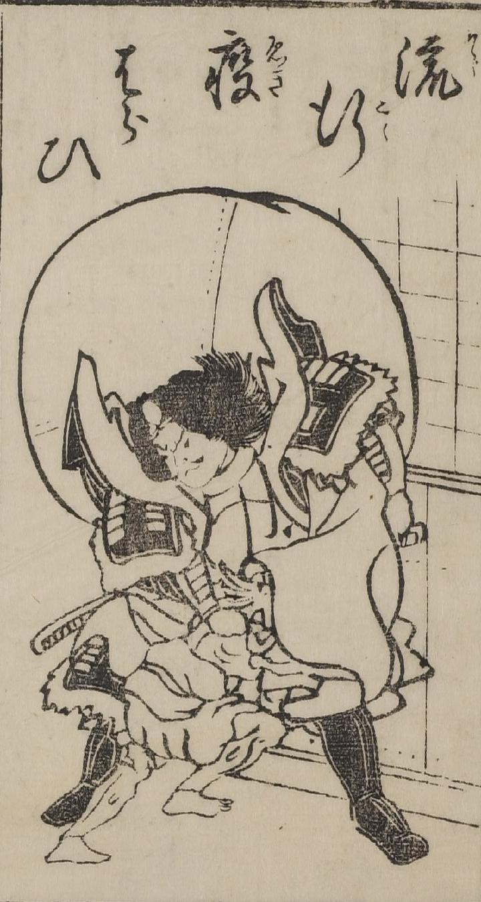

鐘馗；ショウキ，疫神；エキシン

家の中に入ろうとする化物を、鐘馗が阻んでいる姿が描かれている。鐘馗は化物を大きな袋に入れようとしている。
出典：親書誌：U426_nichibunken_0041：流行疫はらひ；リュウコウエキハライ／日付：2006／資源識別子：U426_nichibunken_0041_0001_0000
Copyright (c)2010- International Research Center for Japanese Studies, Kyoto, Japan. All rights reserved.